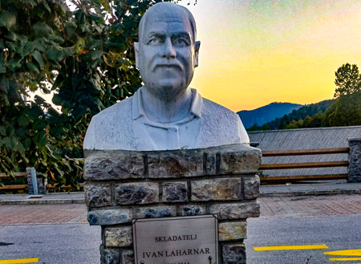
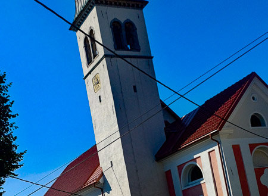
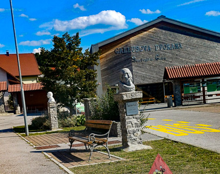
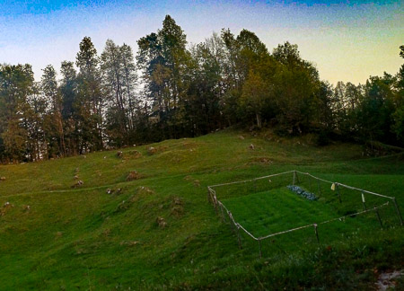
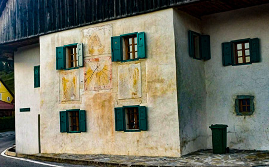

O mojem kraju
Šentviška Gora je slikovito osrednje naselje na Šentviški planoti, ki leži v občini Tolmin med dolinama rek Idrijce in Bače. Osrednja znamenitost vasi je baročna cerkev svetega Vida z oltarji iz 18. stoletja in freskami priznanega slovenskega slikarja Toneta Kralja.
Moj kraj skozi fotografije
Fotografije predstavljajo značilnosti, znamenitosti, naravo in življenje mojega kraja.

Arhitektura

Narava

Ulica ali trg

Zanimiv detajl

Življenje v kraju

Okolica

Prosta izbira
Moja najljubša fotografija
Fotografija me je pritegnila predvsem zaradi svoje bogate zgodovine in zgodbe, ki jo nosi v sebi.Ko pogledam to staro hišo na Šentviški Gori, ne vidim le lepe arhitekture, ampak pravi časovni stroj. Najbolj fascinanten detajl je sončna ura z letnico 1775, ki že več kot dve stoletji neizprosno meri čas in priča o vseh generacijah, ki so živele pod to streho.

Moj kraj v videu
Moj kraj v videu
Poišči primeren YouTube videoposnetek, ki predstavlja tvoj kraj ali njegovo okolico.
šentviška gora
Vir videa: YouTube – sentviska planota
O projektu
AvtorMatija Feltrin
Razred2.rb
PredmetMultimedija
Šolsko leto2026/27
Vse fotografije na spletni strani so lastno delo avtorja, razen če je navedeno drugače.